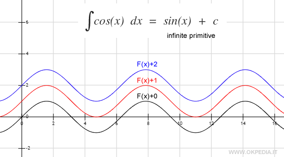
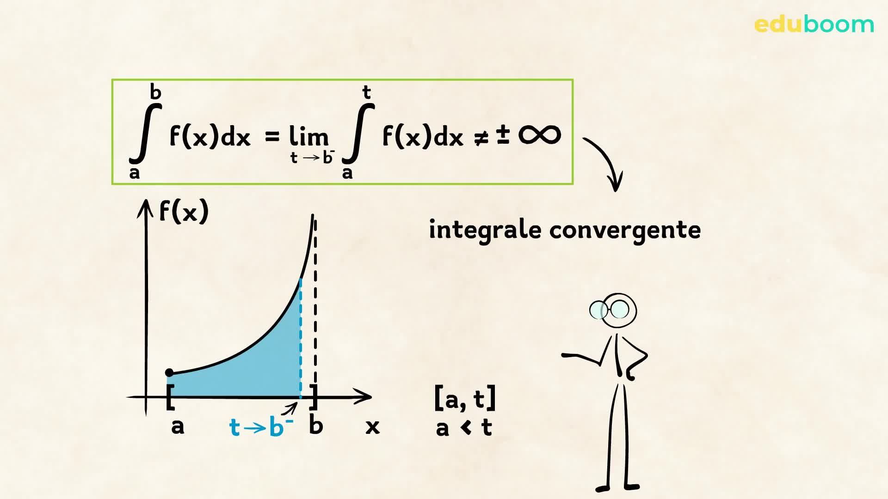

La matematica quest'anno mi è sembrata diversa. Mi sono particolarmente piaciuti gli integrali perché sono stati l'unico argomento di analisi affrontato durante l'anno.
1. Integrale Definito

Rappresenta l'area algebrica tra il grafico di f(x) e l'asse x nell'intervallo [a,b]. Le aree sotto l'asse contano negative.
Teorema Fondamentale del Calcolo:
∫ₐᵇ f(x) dx = F(b) − F(a)
Applicazioni: area tra due curve, lunghezza d'arco, volume di rotazione, lavoro.
2. Integrale Indefinito

L'integrale indefinito di f(x) è l'insieme di tutte le primitive F(x) tali che F'(x) = f(x).
Formula: ∫ f(x) dx = F(x) + C (C = costante di integrazione)
Formule fondamentali:
- ∫xⁿ dx = xⁿ⁺¹/(n+1) + C (n ≠ -1)
- ∫ 1/x dx = ln|x| + C
- ∫ eˣ dx = eˣ + C
- ∫ sin x dx = −cos x + C
- ∫ cos x dx = sin x + C
- ∫ 1/(1+x²) dx = arctan x + C
Tecniche di integrazione: Linearità, Sostituzione, Per parti, Frazioni parziali.
3. Integrale Improprio

Si usa quando l'intervallo è illimitato oppure f(x) ha una discontinuità. Si definisce tramite un limite.
Tipo 1 – estremo infinito: ∫ₐ⁺∞ f(x) dx = lim (t→+∞) ∫ₐᵗ f(x) dx
Tipo 2 – singolarità in x = b: ∫ₐᵇ f(x) dx = lim (t→b⁻) ∫ₐᵗ f(x) dx
Carattere dell'integrale: Converge, Diverge, o Indeterminato.